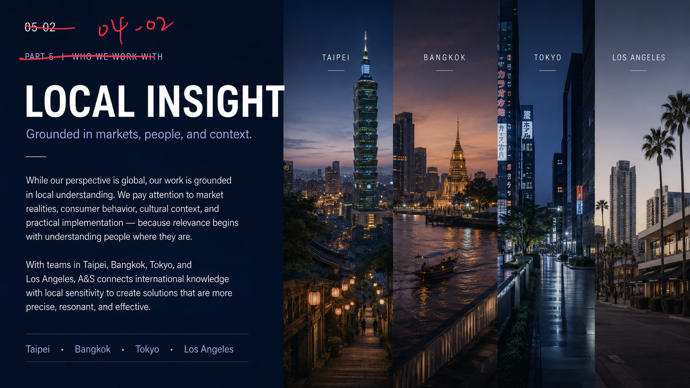
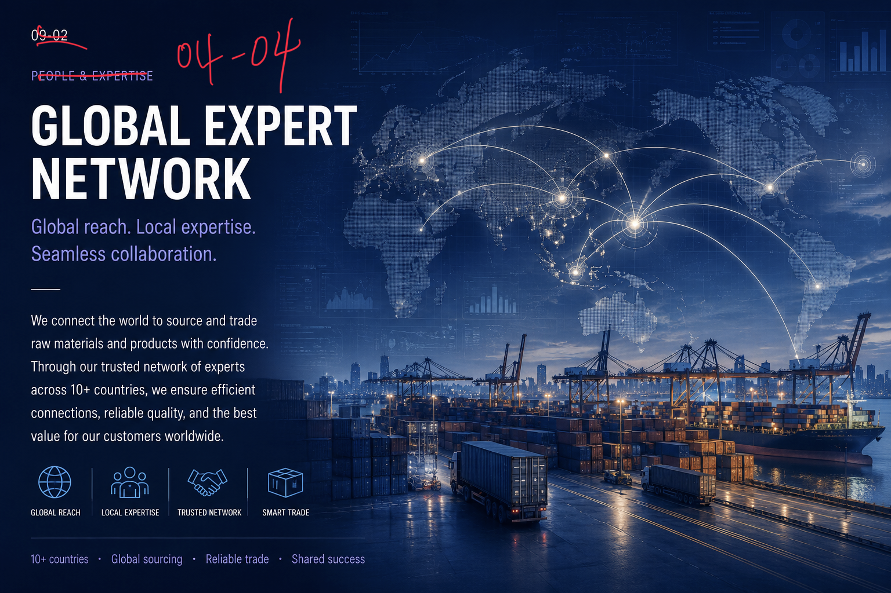
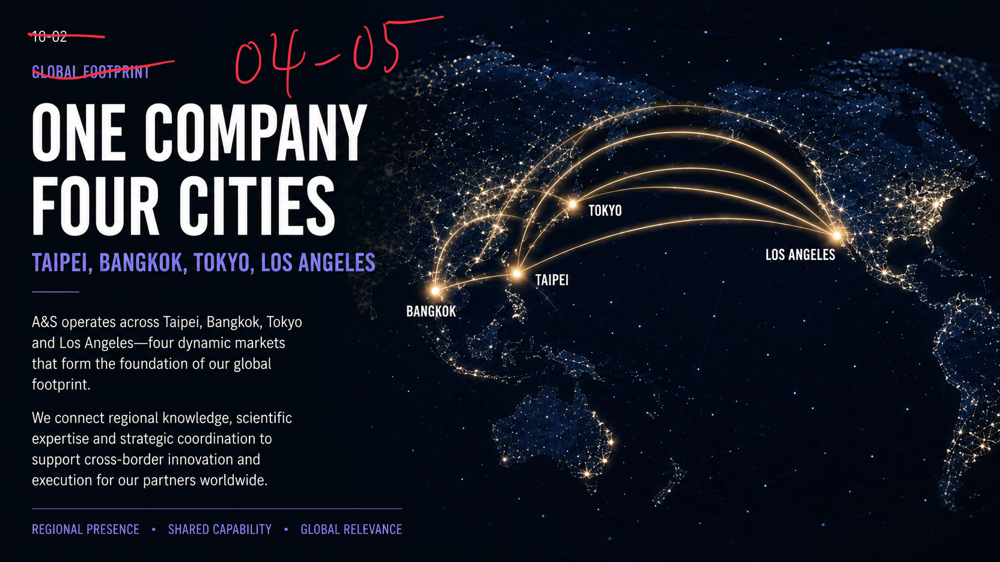
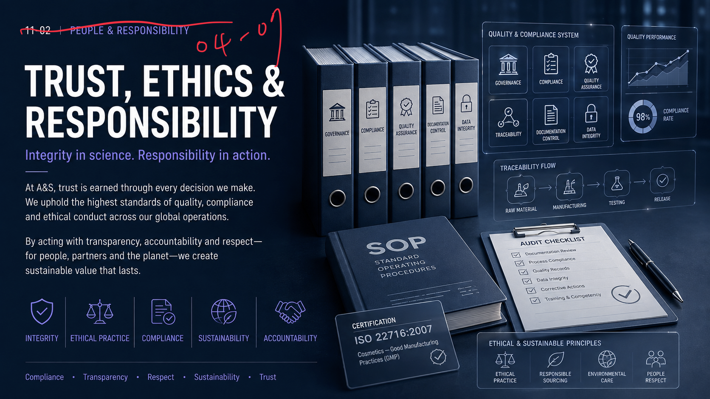

01 Global Capability & People
Global Perspective
Seeing opportunity through a wider lens.
A&S works across markets, cultures, and disciplines. This global perspective helps us recognize emerging opportunities, connect diverse knowledge, and build solutions that are informed by more than one local reality.
By staying close to international developments while understanding regional differences, we help partners think beyond immediate needs and act with broader strategic awareness.
02 Global Capability & People
Local Insight
Grounded in markets, people, and context.
While our perspective is global, our work is grounded in local understanding. We pay attention to market realities, consumer behavior, cultural context, and practical implementation - because relevance begins with understanding people where they are.
With teams in Taipei, Bangkok, Tokyo, and Los Angeles, A&S connects international knowledge with local sensitivity to create solutions that are more precise, resonant, and effective.

Multidisciplinary Team
Science, service and strategy in one integrated team.
A&S brings together specialists across sensory science, neuroscience, biotechnology, life science, flavor and fragrance, functional ingredients, application support and strategic development. This multidisciplinary structure allows us to approach challenges from multiple angles — scientifically, commercially and humanly.
04 Global Capability & People
Global Expert Network
Global reach. Local expertise. Seamless collaboration.
We connect the world to source and trade raw materials and products with confidence. Through our trusted network of experts across 10+ countries, we ensure efficient connections, reliable quality, and the best value for our customers worldwide.

- Global Reach
- Local Expertise
- Trusted Network
- Smart Trade
- 10+ countries
- Global sourcing
- Reliable trade
- Shared success
05 Global Capability & People
One Company, Four Cities
Taipei, Bangkok, Tokyo, Los Angeles.
A&S operates across Taipei, Bangkok, Tokyo and Los Angeles - four dynamic markets that form the foundation of our global footprint.
We connect regional knowledge, scientific expertise and strategic coordination to support cross-border innovation and execution for our partners worldwide.

People First
Human development is part of how we grow.
At A&S, we value people. We treat each other with respect, encourage curiosity, and collaborate across cultures and disciplines. We invest in long-term talent development through mentorship, learning, and meaningful opportunities to grow.
We believe scientific progress is strengthened when people are supported to learn, contribute, and grow together.
07 Global Capability & People
Trust, Ethics & Responsibility
Integrity in science. Responsibility in action.
At A&S, trust is earned through every decision we make. We uphold the highest standards of quality, compliance and ethical conduct across our global operations.
By acting with transparency, accountability and respect - for people, partners and the planet - we create sustainable value that lasts.

- Integrity
- Ethical Practice
- Compliance
- Sustainability
- Accountability
- Compliance
- Transparency
- Respect
- Sustainability
- Trust